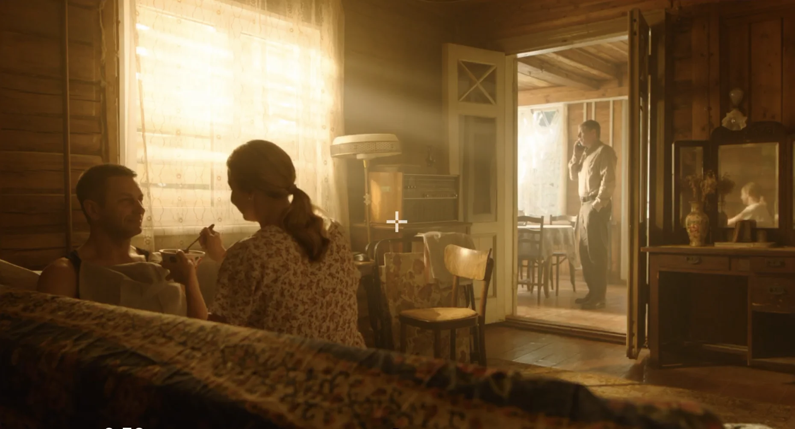

Сериал · в производстве
Любовь преодолеет всё 2

- Должность
- Оператор-постановщик
- Формат
- 16 серий
- Статус
- В производстве
- Режиссёр
- Роман Нестеренко
- Производство
- Кинокомпания TEAMFILMS
- Продюсеры
- Теймур Джафаров
Визуальная задача
Здесь будет текст: какую картинку хотели получить, что было самым сложным и как решали, на что снимали.
Кадры появятся после выхода проекта.